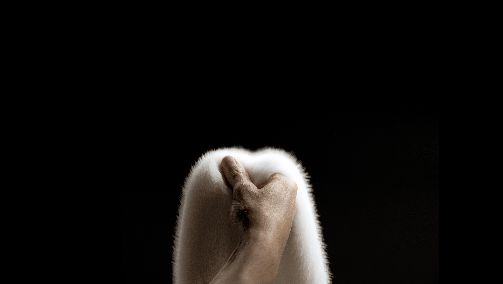
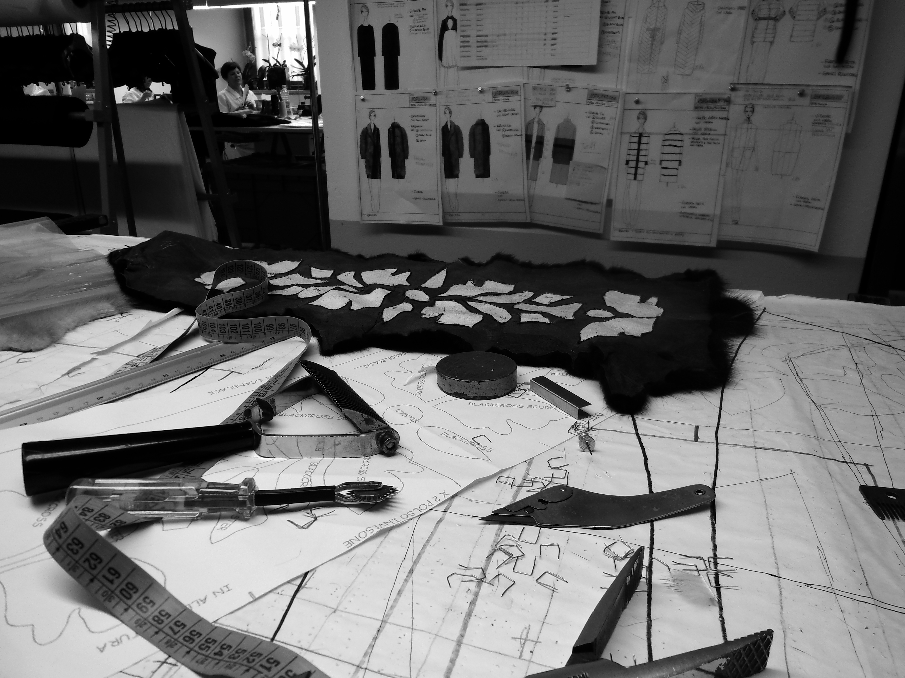
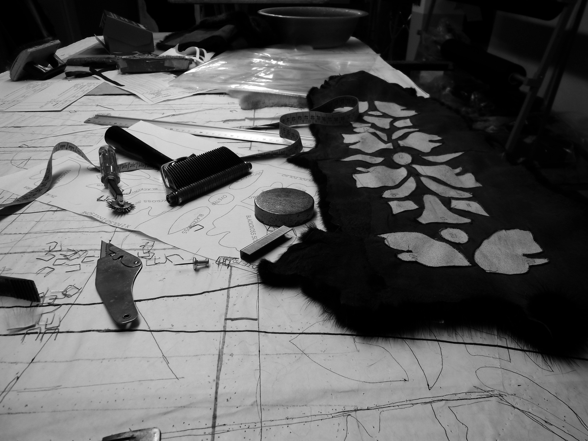
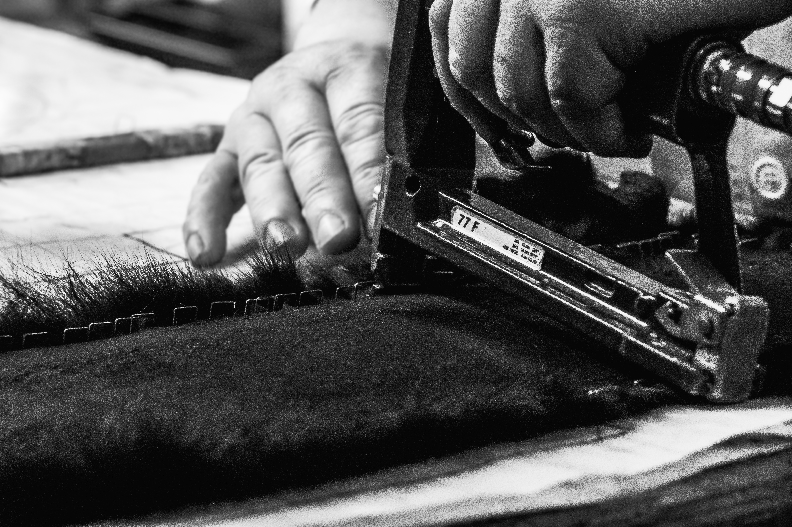
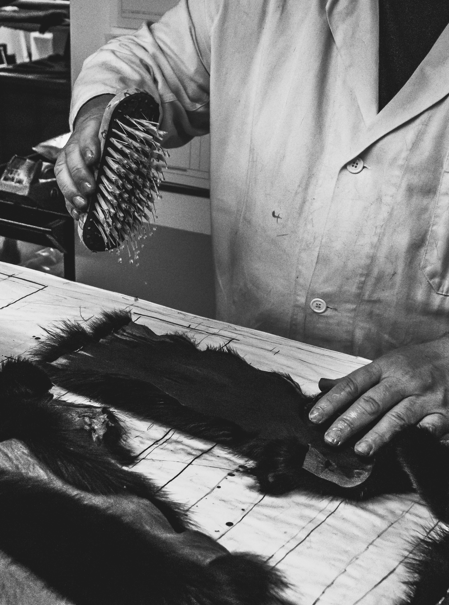
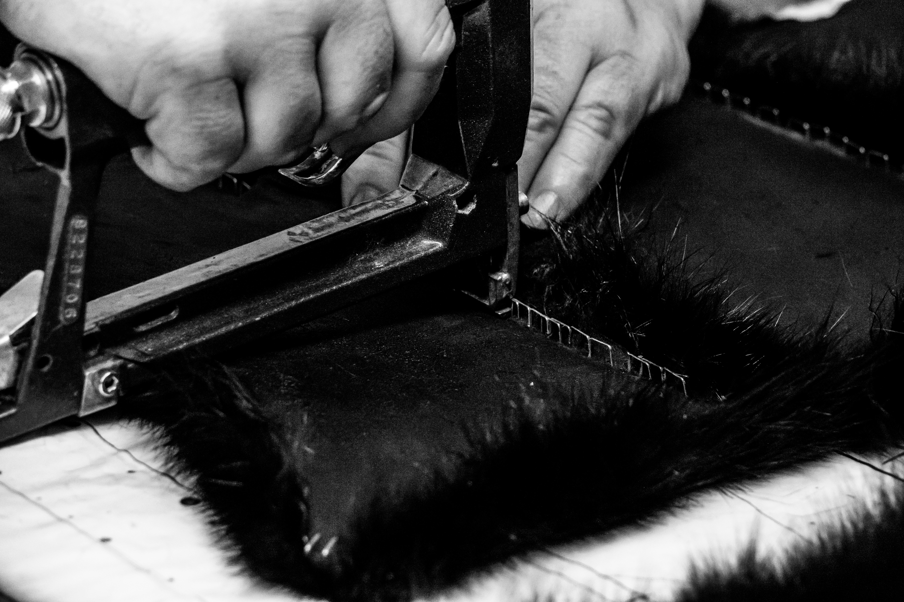
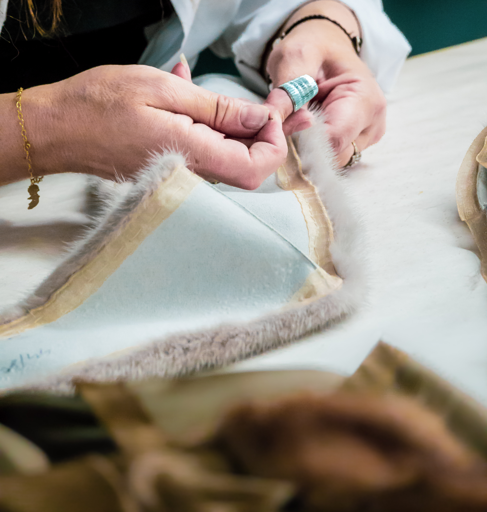
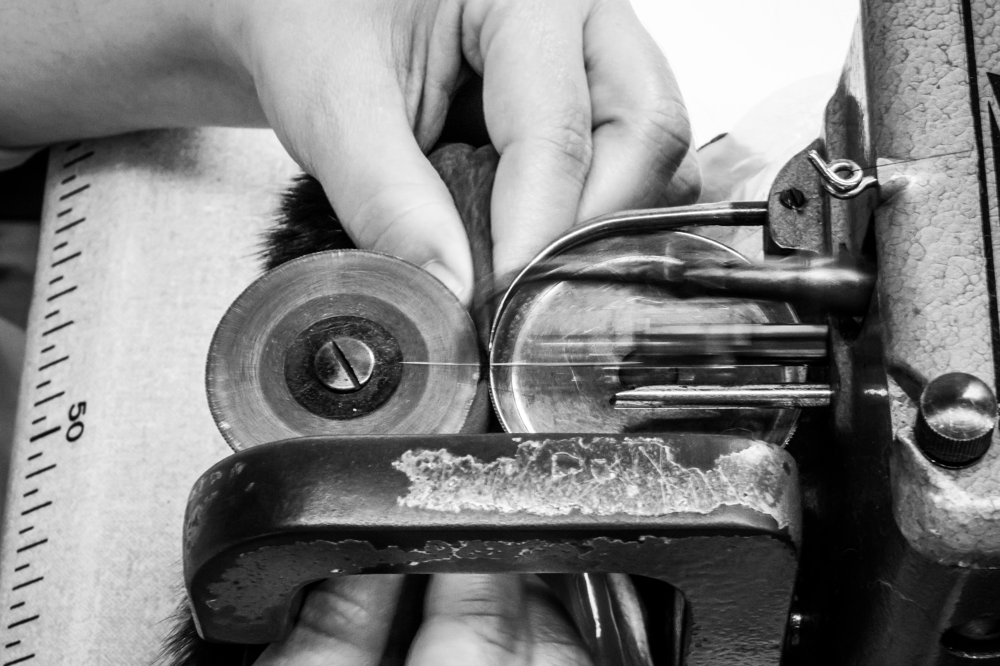

Un secolo di pellicceria artigianale italiana
Fureco · Famiglia Gavazzi · Seregno (MB) · Made in Italy
La storia di Fureco ha inizio in Italia nei primi anni ’20. A Seregno, appena fuori Milano, Cesare Gavazzi affrontò la difficile ripresa economica dopo la Prima Guerra Mondiale aprendo un negozio di articoli in pelle. Il dinamismo imprenditoriale del fondatore, unito ad una forte propensione per i viaggi, lo porterà ben presto a intuire l’opportunità del commercio delle pelli sul mercato italiano.
Questa visione si concretizzò grazie ai figli Pino e Sergio, che cominciarono a partecipare alle più importanti aste internazionali, ingrandirono il negozio, ampliandone l’offerta, e ne consolidarono il nome nel panorama della pellicceria italiana.
Si innescò così un significativo percorso di crescita che condurrà la famiglia, negli anni ’70, a fondare la società Fureco, cui fanno capo le collezioni Fabio Gavazzi, Fabio Gavazzi Uomo e Mavina e le produzioni per le Maison più importanti del fashion system.
Una storia che oggi prosegue grazie alla terza generazione della famiglia, rappresentata dai fratelli Cesare – Amministratore Delegato, membro del CDA dell’AIP (Associazione Italiana Pellicceria) e Presidente di Mifur; Fabio – Direttore Creativo; Alberto – Direttore Commerciale e Responsabile dei rapporti con i grandi Brand della Moda.





La conoscenza delle pelli costituisce il primo fattore distintivo di Fureco: questa competenza custodisce l’eredità di una tradizione e orienta ogni scelta creativa e produttiva, dalla selezione della materia alla costruzione del capo finito.
Una competenza che ancora oggi guida l’azienda in ogni fase della filiera: dall’approvvigionamento alla concia, dal design alla modellistica, fino alla produzione e alla distribuzione. A questo fondamento si affiancano la maestria e la sensibilità degli artigiani, alcuni dei quali lavorano in azienda da oltre quarant’anni.
Per garantire una selezione diretta e rigorosa della materia prima, Fureco partecipa alle più importanti aste internazionali di pelli grezze, tra cui Saga Furs in Finlandia, le principali case d’asta russe, Sojuzpushnina e Ruspushnina, storicamente rilevanti per la selezione di zibellino e altre pelli pregiate. La presenza dei nostri buyer consente all’azienda di individuare le migliori qualità disponibili, valutare provenienza, caratteristiche e potenzialità di ogni pelle e trasformare la fase di acquisto in un momento strategico del processo creativo e produttivo.
La qualità delle pelli, unita alla raffinatezza tattile e visiva delle lavorazioni, definisce l’essenza delle collezioni Fabio Gavazzi.
Il team stilistico, guidato dal Direttore Creativo Fabio Gavazzi, lavora su forme, palette e finiture per dare vita a combinazioni inedite tra pelli pregiate e materiali classici o innovativi. Accanto alla tradizione sartoriale della pellicceria, il brand integra strumenti e software di ultima generazione, mantenendo intatta la centralità della sensibilità manuale.
L’azienda collabora con alcuni dei più importanti marchi di moda italiani, affiancandoli nella preparazione delle collezioni, nella ricerca dei materiali e nello sviluppo di proposte di lavorazione capaci di coniugare competenza tecnica, sensibilità artigianale e visione contemporanea.
Le collezioni Fabio Gavazzi e Mavina sono presenti in Italia e sui principali mercati internazionali attraverso una rete wholesale selezionata, oggi concentrata in Europa, Corea e Cina.

